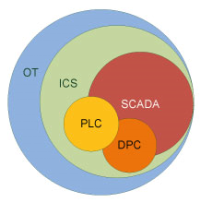
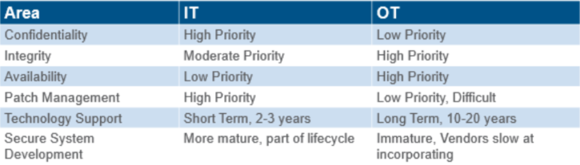

IT vs OT
Operational Technology (OT) refers to computing systems that are used to manage industrial operations

Differences between traditional IT environments and control system environments concerning security
